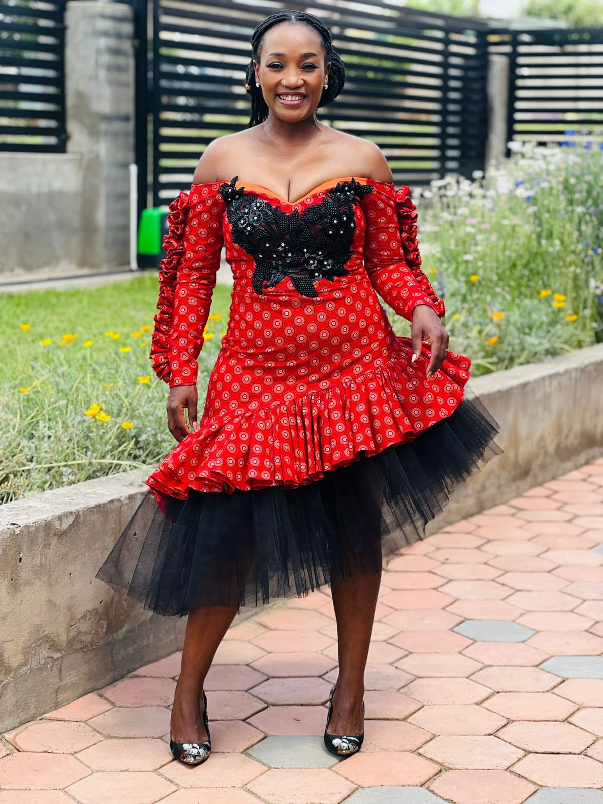

Jane.M Atelier, Maseru, Lesotho
Traditional inspiration,
modern fit.
Custom traditional, Seshoeshoe and Shweshwe-inspired dresses by Jane.M Atelier for weddings, graduations and cultural occasions in Lesotho and South Africa.
Discuss my look
Traditional and culturally inspired dresses are a meaningful search gap for Jane.M because clients in Lesotho and South Africa often look for Seshoeshoe dresses, Shweshwe-inspired outfits, modern traditional wedding looks and cultural occasionwear.
Jane.M can discuss a custom direction that respects the occasion while refining the silhouette, fit, neckline, sleeve, colour balance, fabric placement and level of detail. The result is not a copied costume; it is a made-to-measure interpretation shaped around the client and event.
Bring your event date, cultural references, preferred fabric direction, inspiration images and comfort needs. Jane.M confirms measurements, construction approach, fitting plan, fabric selection and workmanship pricing before production begins.
Free personal styling
Not sure what to wear?
Use the free Jane.M Style Studio to plan outfits around clothes you already own. No purchase, booking or sign-up is required.
Your next move
Plan your next step
Consultation notes
Questions, answered.
Can Jane.M make Seshoeshoe or Shweshwe-inspired dresses?
Jane.M can discuss traditional and culturally inspired custom dress directions, including Seshoeshoe or Shweshwe-inspired details, when the fabric, fit and event needs are clear.
Can a traditional dress be made for a wedding or graduation?
Yes. Traditional inspiration can be adapted for weddings, graduations, family celebrations and other cultural occasions.
Do I need to bring fabric?
You may bring fabric or discuss fabric selection with Jane.M. Fabric choice is confirmed separately from workmanship.